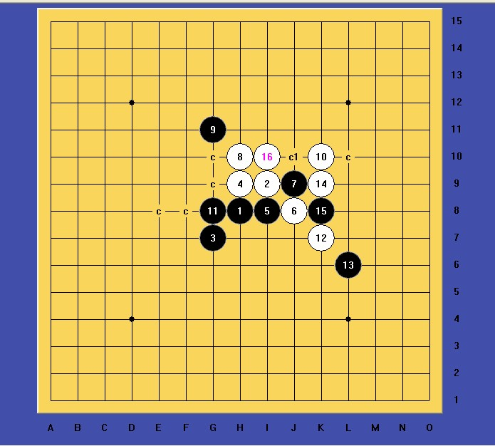

关于斜月三打9的研究
#1 关于斜月三打9的研究 作者：山城刀客 发表时间：2012-3-19 15:11:43
关于斜月三打9的研究|
|
前段时间，我已经发帖子讨论过这个9，今天看到大家又在讨论，我就把自己研究的一些进展发出来和大家一起讨论。
|
|
10手必然

显然，只有两个11最强，C1点已经地毯，图如下：



这个18走后，白棋地毯，难度不是很大。
|
|
那么关于这个11我也进行了很长时间的拆解：

只有G9点目前没地毯出来，难度很大！

显然这个局面 非常的复杂。
继续拆解，毛毯如下 ：

拆到这里，我已经是精疲力尽，深感以自己的力量目前是无法地毯下去的，所以暂时放弃了！！！这个13手后的变化异常复杂，今天贴出来和大家一起讨论。
［此帖子已被 山城刀客 在 2012-3-19 15:18:53 编辑过］
这个15已经地毯（最近）
目前只剩下这个15了：
［此帖子已被 山城刀客 在 2012-3-19 15:50:54 编辑过］
［ wuxiao 于 2012-3-19 17:06:48 时花20金币送鲜花一朵］
［ 冰雪笑醉 于 2012-3-19 17:27:44 时花20金币送鲜花一朵］
［ 冰雪笑醉 于 2012-3-19 17:27:48 时花20金币送鲜花一朵］
［ 冰雪笑醉 于 2012-3-19 17:27:50 时花20金币送鲜花一朵］
［ 冰雪笑醉 于 2012-3-19 17:27:52 时花20金币送鲜花一朵］
［ 逆刃 于 2012-3-19 17:42:57 时花20金币送鲜花一朵］
［ 簡單 于 2012-3-19 18:28:21 时花20金币送鲜花一朵］
［ 冰雪笑醉 于 2012-3-19 18:33:18 时奖励此帖[金币加 100 威望加1］
［ 空恨社小仙同学于 2014-1-29 21:48:44 时花20金币送鲜花一朵］
［ 空恨社小仙同学于 2014-1-29 21:48:44 时花20金币送鲜花一朵］
［ 空恨社小仙同学于 2014-1-29 21:48:44 时花20金币送鲜花一朵］
［ 空恨社小仙同学于 2014-1-29 21:48:44 时花20金币送鲜花一朵］
［ 空恨社小仙同学于 2014-1-29 21:48:44 时花20金币送鲜花一朵］
#2 Re:关于斜月三打9的研究 作者：冰雪笑醉 发表时间：2012-3-19 17:38:39
==============================
此帖内容被屏蔽!
==============================
此帖被冰雪笑醉 屏蔽于 2012-3-19 17:40:29并-20金币
#3 Re:关于斜月三打9的研究 作者：冰雪笑醉 发表时间：2012-3-19 17:39:51
［ 簡單 于 2012-3-19 18:29:10 时花20金币送鲜花一朵］
#4 Re:关于斜月三打9的研究 作者：冰雪笑醉 发表时间：2012-3-19 17:46:46
［ 簡單 于 2012-3-19 18:29:29 时花20金币送鲜花一朵］
#5 Re:关于斜月三打9的研究 作者：賢周 发表时间：2012-3-20 10:30:28
#6 Re:关于斜月三打9的研究 作者：罗源棋手 发表时间：2014-1-27 16:28:32
我刚才小拆了下楼上的14有希望，也许可以考虑一下。#7 Re:关于斜月三打9的研究 作者：忧郁的双眼 发表时间：2014-1-28 12:59:34
#8 Re:关于斜月三打9的研究 作者：忧郁的双眼 发表时间：2014-1-28 13:29:07
#9 Re:山城刀客【==关于斜月三打9的研究==】 作者：空恨社小仙 发表时间：2014-1-29 21:47:55
酱油党坐等此饼出炉...
#10 Re:关于斜月三打9的研究 作者：自来水 发表时间：2014-1-30 8:08:09
#11 Re:关于斜月三打9的研究 作者：罗源棋手 发表时间：2014-1-30 13:02:13
双眼你把没做好的饼往这传一个呗，让大神们帮忙做饼呀。。。